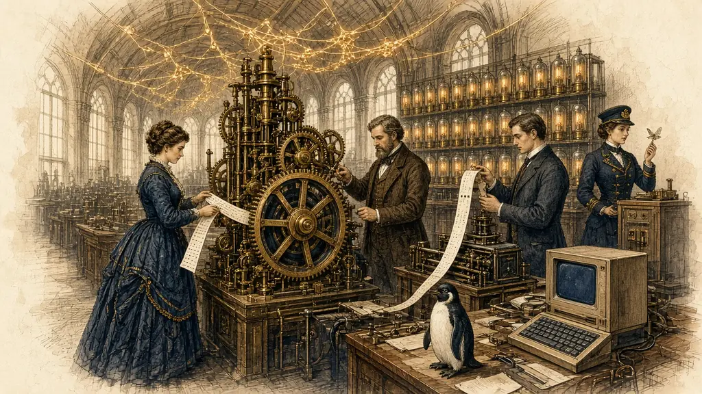

Master 10 key figures in computer history using memory techniques

← The course · Dewey 100 Philosophy →
Before we learn about computer pioneers, let's activate what you already know. This helps anchor new memories to existing knowledge.
Think about these questions. Write your answers aloud or on paper:
"The memory palace technique works best when you connect new information to what you already know."
Review practice strengthens memory. By recalling what you know first, your brain prepares itself to absorb new information about computing pioneers. Today, you'll learn 10 key figures and their inventions using spaced repetition and memory palaces.
Each pioneer below is waiting to be revealed. Click to reveal a pioneer and their contribution. Pay attention to the dates — we'll use the Major System to code these numbers for memorisation.
Click to reveal
Click to reveal
Click to reveal
Click to reveal
Click to reveal
Click to reveal
Click to reveal
Click to reveal
Click to reveal
Click to reveal
Don't try to memorise yet. Your goal is to see each pioneer once and notice: their name, their invention, and the year. Your brain is building initial patterns. This is spacing — we'll return to these facts multiple times.
Now we'll use the Method of Loci (Memory Palace) technique. You'll assign each pioneer to a familiar location, creating a mental journey through your house or school.
Imagine walking through a familiar place (your home, school, or favourite route). You'll place each pioneer at a location. Let's walk through 10 locations:
Pioneer: Alan Turing (1936)
Visualisation: Alan Turing is KNOCKING on your front door, holding a blueprint labelled "Turing Machine"
Pioneer: Ada Lovelace (1843)
Visualisation: Ada Lovelace is WATERING your plant, and the water is flowing in ALGORITHM PATTERNS
Pioneer: Charles Babbage (1837)
Visualisation: Charles Babbage is SITTING on your sofa, building the ANALYTICAL ENGINE out of cushions
Pioneer: Grace Hopper (1950s)
Visualisation: Grace Hopper is REARRANGING your books — writing COBOL CODE on each spine with a golden pen
Pioneer: John von Neumann (1945)
Visualisation: John von Neumann is COOKING a blueprint of computer ARCHITECTURE on your stove
Pioneer: Tim Berners-Lee (1989)
Visualisation: Tim Berners-Lee is WEAVING the WORLD WIDE WEB across your desk like a golden spider web
Pioneer: Vint Cerf (1973)
Visualisation: Vint Cerf is INSTALLING TCP/IP PIPES in your bathroom plumbing (data flowing like water!)
Pioneer: Dennis Ritchie (1972)
Visualisation: Dennis Ritchie is CARVING the letter "C" into your bedpost; it glows like code
Pioneer: Linus Torvalds (1991)
Visualisation: Linus Torvalds is TYPING LINUX CODE on your TV screen — each keystroke makes it glow
Pioneer: Steve Wozniak (1976)
Visualisation: Steve Wozniak is BUILDING an APPLE I computer on your workbench with actual apples as components
The more VIVID, STRANGE, and EMOTIONAL your mental image, the better it sticks. Combine the pioneer's name with their invention in an absurd way. Our brains remember the weird stuff!
Understanding WHY these pioneers matter helps your memory stick. Let's explore the connections between them.
Notice the progression from theoretical to practical:
Ada's Algorithm (1843): Every app you use is following principles she pioneered 180+ years ago. She was the first to think like a programmer.
Turing's Machine (1936): Proved that any problem solvable by human thinking can be solved by a machine. This is the foundation of AI.
Von Neumann's Architecture (1945): Your phone, laptop, and every computer worldwide uses his design: memory, CPU, storage.
Grace's COBOL (1950s): Invented the idea of programming languages that humans could read. Before her, you had to speak machine language!
Ritchie's C (1972): The most influential language ever. It's the DNA of modern systems.
Berners-Lee's Web (1989): Took the internet and made it human-friendly with HTML and HTTP. Changed the world.
"The Web is more a social creation than a technical one. I designed it for a social effect — to help people work together — and not as a technical toy."
Now it's time to test your memory. You have a challenge: recall as many pioneers as you can in 90 seconds, using your memory palace. No looking at the card details!
The key stays hidden until the timer runs out, so you recall first and check afterwards.
Write your answers first, THEN check against this key:
How many did you remember? Don't worry if it's not all 10 — you're building memory. The ones you forgot will be even stronger in your next attempt because you'll feel the gap and remember harder.
This is your final memory test. You will see 10 prompts. For each one, try to recall the pioneer's name, invention, and year WITHOUT looking at the hints. Only reveal if you're stuck!
Who invented the Turing Machine in 1936?
Who wrote the first algorithm in 1843?
Who designed the Analytical Engine in 1837?
Who created COBOL and the first compiler?
Who designed the Von Neumann Architecture in 1945?
Who invented the World Wide Web in 1989?
Who created TCP/IP (internet protocol) in 1973?
Who invented C and Unix in 1972?
Who created Linux in 1991?
Who built Apple I computer in 1976?
You've now learned the 10 most important pioneers in computing history. These names will be on your Dewey Decimal final exam. Use this lesson as a reference, and return to your memory palace whenever you need to recall these facts.
"If I have seen further, it is by standing on the shoulders of giants."